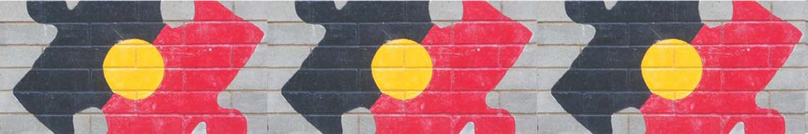

Original Blackboard item · _7400104_1

The social work profession regards social change as significant to the empowerment of people.
Primary healthcare is where health and social work disciplines frequently intersect; a space where workers practices should benefit Aboriginal and Torres Strait Islander Peoples and communities.
This unit looks at the contemporary implications of past healthcare practices and critically discusses the ‘whiteness’ of Australian healthcare. The learnings from this unit are based on cultural safety, including cultural and social determinants of health, and decolonising professional practices.
In Module 1 the different concepts of health are considered. For deeper understanding on Indigenous Australian Peoples' wholistic and multi-dimensional worldviews in relation to health and well-being an Indigenous lens is utilised. The Social and Emotional Well-being (SEWB) framework introduced is based on Aboriginal and Torres Strait Islander peoples' concept of wholistic health and well-being. An Aboriginal psychologist’s description of this framework is provided.
Yarning as a community-accepted communication style is discussed. Clinical Yarning is discussed as a practice for improving clinician-patient communication. Dadirri, an Aboriginal practice of deep listening is also introduced.
The structure of this unit and assessment details will be clarified and discussed in your first workshop (on-line). In your first tutorial there will be extensive discussions on Aboriginal and Torres Strait Islander worldviews and beliefs in relation to health, and how Indigeous worldviews differ from western biomedical perspectives.
By the end of this module you will be able to: